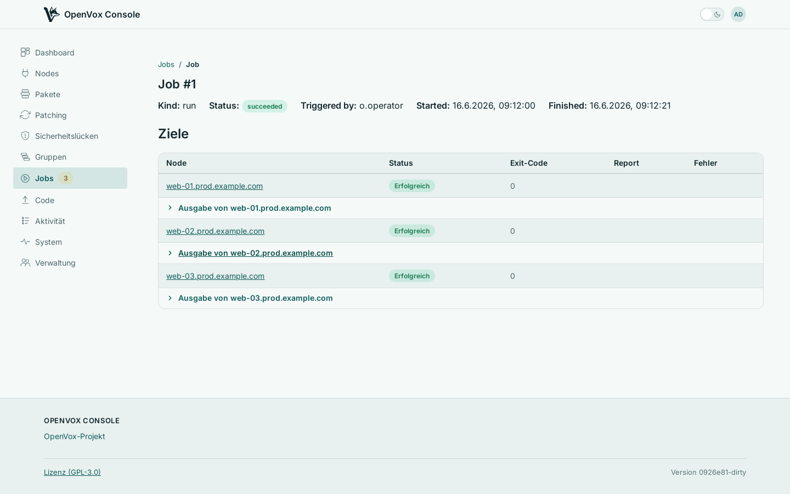

Nutzung
Jobs ausführen
Führen Sie Puppet oder einen Puppet-Task auf Abruf auf einem Node, einer Auswahl, den Nodes, auf die eine Abfrage zutrifft, oder einer Node-Gruppe aus und sehen Sie, was jeder Node getan hat.
Die Konsole kann Puppet sofort auf Nodes ausführen, statt bei deren nächstem geplanten Lauf, und die Puppet-Tasks ausführen, die Ihr deployter Code enthält. Jede Anfrage ist ein Job, verzeichnet mit jedem angesprochenen Node und dem, was auf jedem geschehen ist.
Einen Job zu starten erfordert orchestrator:run; Jobs zu sehen erfordert orchestrator:read. Ein Node muss verbunden sein, um erreicht zu werden: siehe Nodes hinzufügen.
Ist Ihre Rolle auf bestimmten Node-Gruppen gewährt, können Sie Jobs nur auf Nodes in diesen Gruppen starten und sehen nur deren Jobs. Ein Job, der einen Node außerhalb davon nennt, wird vollständig abgelehnt – auch auf den anderen Nodes läuft nichts –, und die Konsole sagt, welche Nodes wegzulassen sind. Siehe Benutzer, Rollen und Tokens.
Um mehrere Läufe und Tasks der Reihe nach auszuführen, siehe Pläne ausführen. Um einen Job später oder wiederholt zu starten, siehe Jobs planen.
Puppet ausführen
Von dort aus, wo Sie die gewünschten Nodes gerade sehen:
- Ein Node: Führen Sie auf der Seite des Nodes Puppet aus.
- Eine Auswahl: Wählen Sie auf der Seite Nodes Nodes aus und führen Sie dann Puppet auf der Auswahl aus.
- Jeder Node, auf den eine Gruppe zutrifft: Führen Sie auf der Seite der Gruppe Puppet auf ihren übereinstimmenden Nodes aus.
Jeder öffnet einen Dialog, der die Nodes nennt. Bestätigen Sie ihn, um einen Job zu starten, zu dem Sie dann weitergeleitet werden.
Oder beginnen Sie auf der Seite Jobs, wo Sie mit Puppet ausführen und Task ausführen angeben, auf welchen Nodes: siehe Die Nodes wählen.
Laufoptionen
Der Dialog bietet drei Optionen. Ist keine gewählt, ist der Lauf ein gewöhnlicher.
- No-op meldet, was der Lauf ändern würde, und ändert nichts. Der Job zeigt die Liste für jeden Node.
- Debug-Ausgabe zeichnet für jeden Node des Jobs das Debug-Log von Puppet auf.
- Environment bittet den Node, gegen dieses Environment zu laufen, um einen Node gegen einen Branch zu testen.
Das Environment ist eine Bitte, keine Übersteuerung. Wenn die Node-Gruppen eines Nodes ein Environment setzen, verwendet Puppet dieses, egal was der Lauf verlangt. Der Job markiert jeden Node, der in einem anderen als dem angeforderten Environment lief, sobald der Report des Nodes eintrifft.
Ein Lauf mit Optionen zeichnet auf, was Puppet ausgegeben hat. Öffnen Sie im Job unter der Zeile eines Nodes Ausgabe, um es zu lesen. Lange Ausgaben werden bei 256 KB abgeschnitten, und das wird angezeigt.
Laufoptionen erfordern einen Node-Agent-Client aus dieser Version der Konsole oder neuer. Ein älterer Client lehnt die Anfrage ab, und die Zeile des Nodes schlägt mit dem Hinweis fehl, dass der Client zu alt ist. Puppet wird auf diesem Node gar nicht ausgeführt, sodass eine No-op-Anfrage nie als echter Lauf ausgeführt wird. Aktualisieren Sie den Client – siehe Node-Agenten aktuell halten – und führen Sie erneut aus. Ein Lauf ohne Optionen funktioniert mit jeder Client-Version.
Über die API, mit einem Access-Token:
curl -X POST https://console.example.com/api/v1/orchestrator/runs \
-H "Authorization: Bearer <access token>" \
-H 'Content-Type: application/json' \
-d '{"targets":["web01.example.com","web02.example.com"]}'
Fügen Sie für einen Lauf mit Optionen options hinzu. Jede der drei kann weggelassen werden:
-d '{"targets":["web01.example.com"],
"options":{"noop":true,"environment":"feature_x","debug":true}}'
Die Anfrage wird abgelehnt, und kein Job wird angelegt, wenn der Environment-Name ungültig ist, wenn openvoxserver kein solches Environment hat oder wenn sie eine Option nennt, die die Konsole nicht kennt.
Die Nodes wählen
Puppet ausführen und Task ausführen auf der Seite Jobs fragen auf eine von drei Arten, auf welchen Nodes ausgeführt werden soll:
-
Liste von Nodes: Certnames, einer pro Zeile.
-
Abfrage: eine PQL-Abfrage, die
certnamezurückgibt. Die Konsole führt sie beim Start des Jobs gegen openvoxdb aus, und der Job läuft auf den Nodes, die sie zurückgibt:inventory[certname] { facts.os.family = "Debian" and facts.os.release.major = "12" } -
Node-Gruppe: die Nodes, die beim Start des Jobs in der Gruppe sind.
Nodes anzeigen zeigt die Nodes, die Ihre Auswahl gerade bedeutet. Der Dialog zeigt sie Ihnen immer, bevor er etwas startet: Beim ersten Wählen von Ausführen wird die Vorschau ausgeführt, beim zweiten der Job gestartet. Eine Abfrage oder Gruppe, die auf keine Nodes zutrifft, startet nichts.
Eine Abfrage muss in der eigenen Syntax von PQL geschrieben sein und certname zurückgeben. Eine Abfrage, die die Konsole oder openvoxdb nicht verwenden kann, wird mit Begründung abgelehnt; bei einem Syntaxfehler ist das die eigene Meldung von openvoxdb, die auf den Fehler zeigt.
Ist Ihre Rolle auf bestimmten Node-Gruppen gewährt, liefert Ihnen eine Abfrage oder eine Gruppe die passenden Nodes in Ihren Gruppen und sagt nichts über andere. Ihre Abfrage darf außerdem keine Unterabfrage enthalten – die geschweiften Klammern einer Entität innerhalb derer einer anderen –, weil sich mit einer solchen Abfrage etwas über Nodes herausfinden ließe, die Sie nicht sehen können. Fragen Sie eine einzelne Entität ab, wie im obigen Beispiel; inventory erreicht jeden Fact und Trusted Fact eines Nodes. In einer Liste genannte Nodes gelten weiterhin nach dem Prinzip „alle oder keiner“.
Geben Sie über die API query oder group (die ID einer Node-Gruppe) anstelle von targets an:
curl -X POST https://console.example.com/api/v1/orchestrator/runs \
-H "Authorization: Bearer <access token>" \
-H 'Content-Type: application/json' \
-d '{"query":"inventory[certname] { facts.os.family = \"Debian\" }",
"options":{"noop":true}}'
POST /api/v1/orchestrator/targets/resolve nimmt dieselben targets, query oder group entgegen und antwortet mit den Nodes, ohne etwas zu starten.
Einen Task ausführen
Ein Task ist ein Skript, das im Verzeichnis tasks eines Moduls mitgeliefert wird, mit einer Metadatendatei, die seine Parameter beschreibt. Die Konsole führt die Tasks im Code aus, den Sie deployt haben – siehe Code deployen –, für einen Task muss also nichts installiert werden außer dem Deploy des Moduls, das ihn enthält.
Tasks werden an denselben Stellen angeboten wie Puppet-Läufe: Task ausführen auf der Seite eines Nodes, bei der Auswahl auf der Seite Nodes, bei den übereinstimmenden Nodes einer Gruppe und auf der Seite Jobs. Im Dialog:
- Wählen Sie das Environment, aus dem der Task stammen soll. Tasks werden aus dem Code dieses Environments gelesen, so wie er gerade deployt ist.
- Wählen Sie den Task. Seine Beschreibung und ein Feld für jeden Parameter erscheinen darunter. Ein mit
*markiertes Feld ist erforderlich; ein leer gelassenes erhält den Default, den seine Metadaten deklarieren. - Legen Sie optional ein Timeout fest. Ein Task, der bei seinem Ablauf noch läuft, wird samt allem, was er gestartet hat, gestoppt und als abgelaufen gemeldet. Es beträgt 30 Minuten, sofern Sie nichts anderes angeben, und höchstens 55.
- Task ausführen startet den Job und bringt Sie zu ihm.
Die Konsole prüft die Parameter gegen die Metadaten des Tasks, bevor sie irgendetwas startet, und markiert jedes abgelehnte Feld mit der Begründung. Es wird kein Job angelegt, bis sie stimmen.
Eine Rolle kann auf einige Tasks beschränkt sein; dann bietet die Liste Task nur die an, die Sie ausführen dürfen. Ein Task, den Sie nicht ausführen dürfen, wird mit 403 und seinem Namen abgelehnt, egal ob Sie ihn aus der Liste wählen oder über die API anfordern – siehe Eine Rolle auf einige Tasks beschränken.
Ein Parameter, den die Metadaten des Tasks als sensitive markieren – ein Passwort, ein Token –, wird in ein maskiertes Feld eingegeben. Sein Wert wird an die Nodes gesendet und nirgendwohin sonst: Die gespeicherten Parameter des Jobs, seine Seite, das Aktivitätsprotokoll und das Audit-Protokoll zeigen stattdessen alle Sensitive [value redacted].
Über die API, mit Nennung des Tasks, seiner Parameter und optional des Environments und des Timeouts in Sekunden:
curl -X POST https://console.example.com/api/v1/orchestrator/tasks \
-H "Authorization: Bearer <access token>" \
-H 'Content-Type: application/json' \
-d '{"targets":["web01.example.com"],
"task":"service",
"params":{"action":"restart","name":"nginx"},
"environment":"production",
"timeoutSeconds":600}'
Die API prüft auf dieselbe Weise: Ein unbekannter Task, ein fehlender oder unerwarteter Parameter oder ein Wert des falschen Typs wird mit 400 abgelehnt, und ihre fields nennen jedes Problem. Der Task-Katalog hinter dem Dialog steht ebenfalls in der API: GET /api/v1/tasks/environments, GET /api/v1/tasks?environment=production und GET /api/v1/tasks/<module>/<task>?environment=production (der eigene Task eines Moduls ist <module>/init).
Was der Node tut
Der Agent des Nodes lädt die Dateien des Tasks mit seinem eigenen Zertifikat von dem Puppet-Server herunter, den sein eigener Puppet-Agent verwendet, und führt nichts aus, solange nicht jede Datei der Prüfsumme entspricht, die die Konsole nachgeschlagen hat. Er behält verifizierte Dateien, sodass ein erneutes Ausführen desselben Tasks nichts herunterlädt.
Das Skript eines Tasks wird direkt ausgeführt, daher entscheidet seine erste Zeile, womit es läuft (#!/bin/sh, #!/usr/bin/env python3). Ruby-Tasks laufen mit dem Ruby, das mit dem Puppet-Agenten kommt, und unter Windows laufen PowerShell-Tasks in PowerShell. Bietet ein Task mehrere Implementierungen an, wählt der Node die passende.
Ein Node findet seinen Puppet-Server, indem er seine eigene Puppet-Konfiguration abfragt. Ein Node, der ihn stattdessen über DNS-SRV-Einträge findet, hat dort keine Adresse zum Auslesen; setzen Sie NODE_AGENT_PUPPET_SERVER=puppet.example.com:8140 in der Umgebung seines Agenten.
Nodes brauchen einen Agenten von einer Konsole mit Task-Unterstützung. Ein Node mit älterem Agenten lässt jeden Task mit Error: Unknown subcommand 'task' fehlschlagen: Führen Sie das Installationsskript des Nodes erneut aus, um ihn zu aktualisieren – siehe Nodes hinzufügen.
Einen Job verfolgen
Die Seite Jobs listet jeden Job auf, den neuesten zuerst. Die Seite eines Jobs zeigt jedes Ziel in einer eigenen Zeile – Status, Exit-Code und Ausgabe –, sodass ein Job, der auf neun Nodes funktioniert hat und auf einem fehlgeschlagen ist, genau das sagt.


Lief ein Job auch auf Nodes außerhalb Ihrer Node-Gruppen, zeigt seine Seite nur Ihre Nodes und weist darauf hin. Der Gesamtstatus des Jobs umfasst weiterhin jeden Node, auf dem er lief, daher kann er fehlgeschlagen lauten, obwohl alle Nodes, die Sie sehen, erfolgreich waren.
Bei einem Task öffnet sich die Zeile jedes Ziels und zeigt das Ergebnis des Tasks: das ausgegebene JSON oder seinen Text unter _output. Ein Task schlägt fehl, wenn er mit etwas anderem als 0 endet oder einen _error meldet, dessen Meldung als Fehler der Zeile angezeigt wird.
Ein Node, der beim Start des Jobs nicht verbunden war, schlägt sofort mit „agent not connected“ fehl, statt den Job offen zu halten.
Wenn ein Lauf abgeschlossen ist, verlinkt seine Zeile auf den Report, den dieser Lauf erzeugt hat, mit jeder Ressource, die er geändert hat.
Die Job-Liste und die Seite eines Jobs zeigen die Optionen eines Laufs: No-op, das angeforderte Environment und Debug.
Sie zeigen außerdem, woher die Nodes eines Jobs stammen, wenn es keine Liste war: die Abfrage oder die Node-Gruppe. Ein von einem Zeitplan gestarteter Job nennt den Zeitplan und wird als vom Besitzer des Zeitplans ausgelöst verzeichnet. Lief ein über eine Abfrage gestarteter Job auch auf Nodes außerhalb Ihrer Node-Gruppen, werden Ihnen Ihre Nodes angezeigt, aber nicht die Abfrage.
Start und Ergebnis jedes Jobs werden ebenfalls auf der Seite Aktivität verzeichnet.
Ein Plan ist eine Zeile in der Liste. Seine Seite zeigt seine Schritte der Reihe nach, jeden mit eigenem Zustand und eigenen Node-Ergebnissen.
Ein Job, dessen Instanz gestoppt wurde
Ein Job wird von der Konsoleninstanz, die ihn gestartet hat, bis zum Ende verfolgt. Stoppt diese Instanz, bevor ihre Ziele fertig sind, würde der Job sonst für immer als laufend angezeigt; stattdessen wird er als fehlgeschlagen markiert, sobald er weit länger läuft, als irgendein Lauf dauern kann.